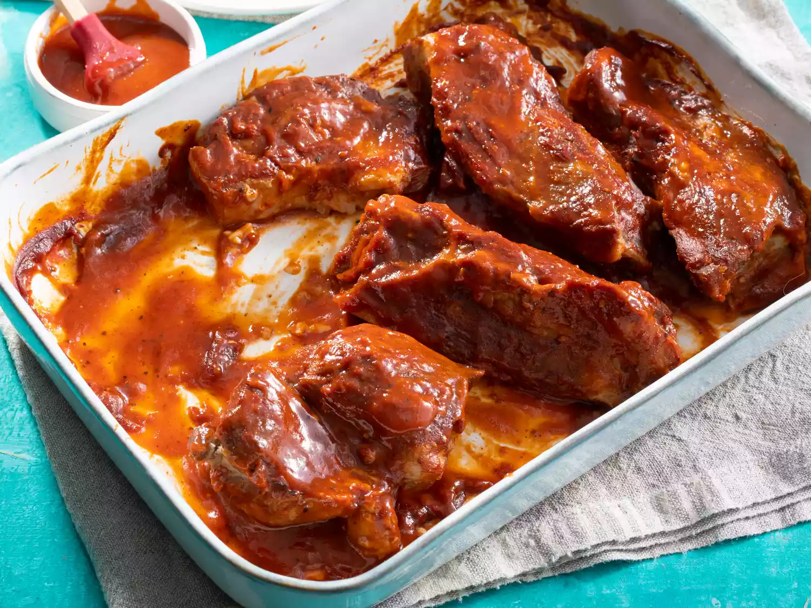

Simple BBQ Ribs

Description
Learn how to make the perfect ribs without a grill using this delicious BBQ ribs recipe. With just five simple ingredients and your oven, you can create tender, flavorful ribs that your entire family will enjoy. After trying this recipe, you'll never want to use another BBQ rib recipe again.
Ingredients
- 2 ½ pounds country-style pork ribs
- 2 tablespoons kosher salt
- 1 tablespoon garlic powder
- 1 teaspoon ground black pepper
- 1 cup BBQ sauce
Steps
- Gather all ingredients.
- Place ribs in a large pot and cover with water. Stir in kosher salt, garlic powder, and pepper, and bring water to a boil over medium heat. Continue to boil until ribs are tender, 40 to 45 minutes.
- While the ribs are boiling, preheat the oven to 325 degrees F (165 degrees C).
- Remove ribs from the pot, and place them in a 9x13-inch baking dish. Pour barbeque sauce over ribs. Cover the baking dish with aluminum foil.
- Bake in the preheated oven until the internal temperature of the pork has reached 160 degrees F (70 degrees C), 1 to 1 1/2 hours.
- Serve hot and enjoy!